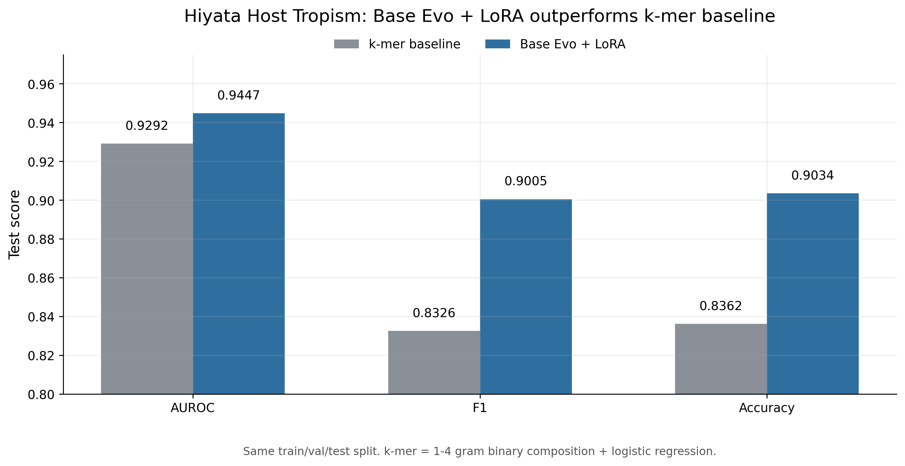
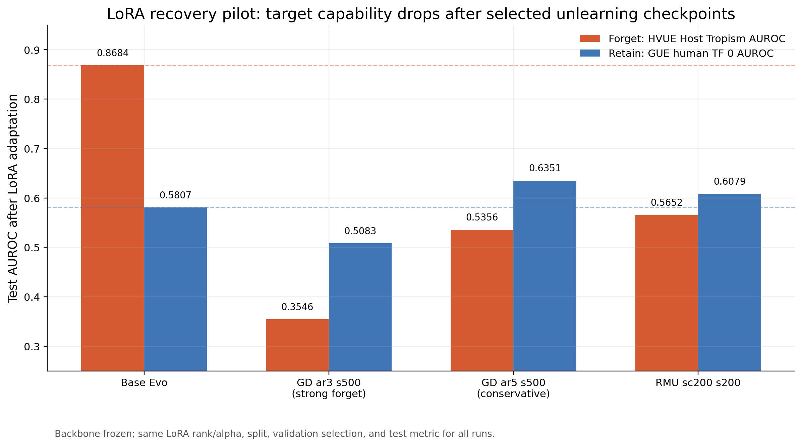
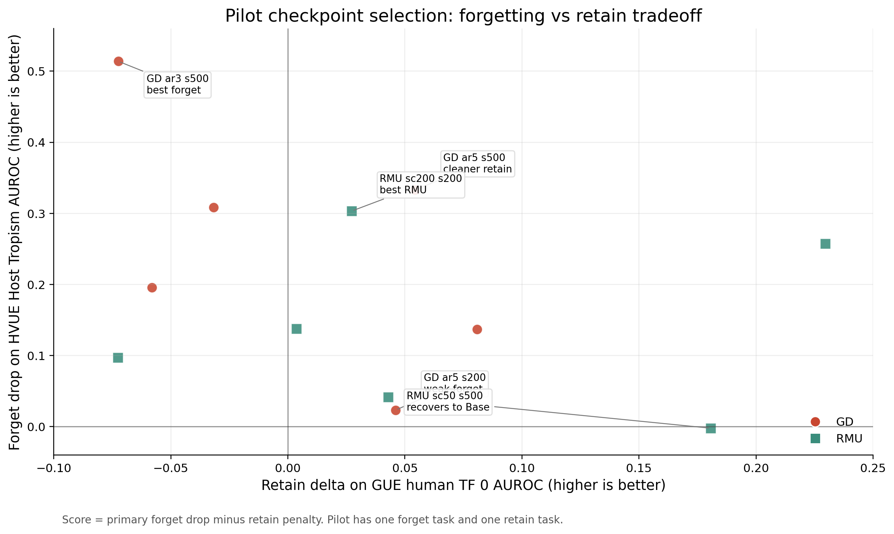
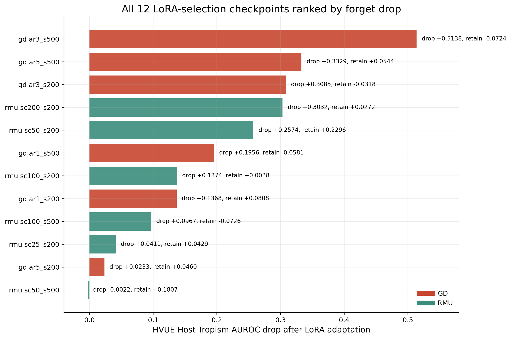

1. This Week's Focus
The key issue from the last discussion was that HVUE Host Tropism looked weak under a linear probe and was lower than a simple k-mer profiler. This week I treated that as an evaluation problem first: maybe the signal is present in Evo, but not easy to read with a linear classifier.
Use the same lightweight adaptation protocol for Base, unlearned, and later recovered models.
Run Hiyata Host Tropism with k-mer logistic regression and Base Evo + LoRA.
Train 12 probe-free GD/RMU checkpoints and evaluate LoRA recovery on HVUE/GUE pilot tasks.
2. Unified LoRA Downstream Protocol
The new evaluator freezes Evo and only trains LoRA adapters plus a task head. This tests whether a lightweight downstream user can still recover the target ability.
| Setting | Value | Why it matters |
|---|---|---|
| LoRA rank / alpha / dropout | 8 / 16 / 0 | Fixed across all runs for fair comparison. |
| Learning rate / max length / seed | 1e-4 / 512 / 42 | Same adaptation setup for Base and unlearned models. |
| Validation rule | Evaluate every 100 steps, patience 3 | Test metrics come from the best validation checkpoint. |
| Trainable parameters | ~17.8M of ~6.47B | Lightweight adaptation, not full finetuning. |
3. Sanity Check: Does LoRA Bring Out More Signal Than k-mer?
I first tested Base Evo on Hiyata Host Tropism before evaluating unlearning. The k-mer baseline uses binary 1-to-4-mer composition features with logistic regression. Base Evo + LoRA uses the frozen-backbone LoRA protocol above.

Host Tropism is not fully explained by simple k-mer composition in this check.
4. Probe-Free Unlearning Grid
After confirming the LoRA protocol is useful, I trained a new full-model candidate grid instead of selecting checkpoints from the old probe/PPL results.
Gradient Difference
Each step samples one forget batch and one retain batch. The loss pushes language modeling worse on human-tropic forget sequences and preserves retain sequences.
Grid: retain weight 1, 3, 5 × 200 or 500 steps.
Representation Misdirection
A frozen reference model is kept. Forget representations at layer 6 are pushed toward a fixed random direction, while retain representations stay close to the reference.
Grid: steer coefficient 25, 50, 100, 200 with 200 or 500 steps.
| Method | Number of checkpoints | Main sweep variable | Selection metric after training |
|---|---|---|---|
| GD full-model | 6 | Retain weight and steps | LoRA recovery on HVUE/GUE pilot |
| RMU full-model | 6 | Steer coefficient and steps | LoRA recovery on HVUE/GUE pilot |
5. LoRA Recovery Pilot
For each checkpoint, I froze the unlearned backbone, injected the same LoRA adapters, trained on the downstream train split, selected by validation, and reported test metrics.
Tests whether the human-virus-relevant target capability drops after unlearning.
Used as a quick general-genomics retain sanity check in this pilot.

| Run | Role | HVUE AUROC | HVUE AUPRC | HVUE F1 | GUE AUROC | GUE AUPRC |
|---|---|---|---|---|---|---|
| Base Evo | Reference | 0.8684 | 0.8428 | 0.7915 | 0.5807 | 0.5912 |
| GD ar3 s500 | Strongest forgetting | 0.3546 | 0.4003 | 0.3333 | 0.5083 | 0.5215 |
| GD ar5 s500 | More retain-preserving GD | 0.5356 | 0.5719 | 0.3333 | 0.6351 | 0.6208 |
| RMU sc200 s200 | Best RMU | 0.5652 | 0.5867 | 0.3333 | 0.6079 | 0.6115 |
6. Candidate Selection: Forgetting vs Retain
The pilot ranking uses HVUE forget drop and GUE retain delta. Higher forget drop is better; higher retain delta is also better.

HVUE drop 0.5138, but GUE retain delta -0.0724.
HVUE drop 0.3329 with GUE retain delta +0.0544.
HVUE drop 0.3032 with GUE retain delta +0.0273.

7. Current Status and Next Steps
Completed
- Implemented the primary LoRA downstream evaluation path.
- Confirmed Base Evo + LoRA beats k-mer on Hiyata Host Tropism.
- Trained and evaluated 12 full-model GD/RMU candidates with LoRA recovery pilot.
- Selected three candidates for full benchmark: strongest GD, conservative GD, and best RMU.
Planned Extensions
- Full HVUE forget task evaluation.
- Full GUE retain task evaluation.
- Multi-seed stability checks.
- vGUE / ViroBench / non-human viral retain task integration.
Planned Full Benchmark
| Axis | Planned coverage |
|---|---|
| Models | Base Evo, strongest GD, conservative GD, best RMU |
| HVUE forget tasks | Host tropism, human-virus pathogenicity, coronavirus / orthomyxovirus / calicivirus transmissibility |
| GUE retain tasks | Promoter, splice, TF binding, chromatin accessibility |
| Robustness | Multiple seeds and task-level comparisons against Base and k-mer baselines |